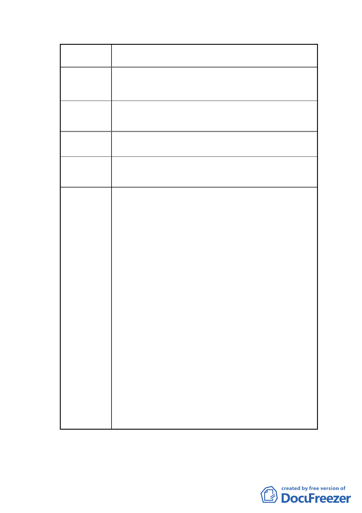

案名
擬定臺北市南港區鐵路地下化沿線土地（編號 BR-1 原
臺鐵調車場公園以西部分）細部計畫案
方式開發。故細部計畫書第 8 頁、第 10 頁、第 12 頁、
第 13 頁中有關劃設「特定商業區（三）」及「特定商業
區（四）」之原劃設理由已不存在。
建議辦法 2
取消劃設「特定商業區（三）」及「特定商業區（四）」，
統一劃設為「特定商業區」。
同陳情理由 2，故細部計畫書第 8 頁及第 13 頁中有關
陳情理由 3 都市更新開發方式採「 設定地上權」部分，建議刪除。
建議辦法 3
細部計畫中有關都市更新開發方式採「設定地上權」
之說明文字，統一改為「以都市更新方式」辦理開發。
委員會
決議
本案依本會幕僚意見及委員會議提送補充會議資
料修正通過。
（一）使用分區名稱依市府本會會議所提補充資料，修
正為全區皆為特定商業區（三），允許使用項目
比照臺北市土地使用分區管制自治條例第 3 種
商業區規定辦理，惟供住宅使用之容積樓地板面
積（含其附屬相關設施）不得超過容積總樓地板
面積之 30%。計畫書內有關特定商業區（四）採
設定地上權等文字，請一併修正。
（二）計畫書第 14 頁（四）容積獎勵上限，同意依市
府所提補充資料，修正為「容積上限」，後段文
字一併修正為「如無依都市更新建築容積獎勵
辦法規定申請放寬容積獎勵上限之需求，則各
項容積獎勵及容積移轉合計之總容積樓地板面
積不得超過原法定容積之 50%，另前開 50%上限
規定不包含都市更新獎勵」。
（三）計畫書第 1 頁，請補列本案申請單位：臺北市政
府。
（四）計畫書請補充土地權屬文字說明及圖面。
（五）計畫書第 17 頁有關協議書約定回饋內容及時
程，訂定人補列新北市政府。
-8-